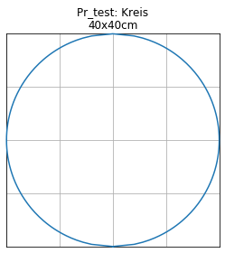
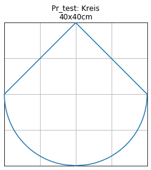
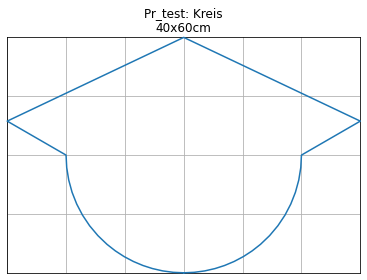

Examples for general profile shapes¶
[10]:
from shape_generator import CrossSectionHolding as CrossSection, Circle, csv
Example for standard egg cross section¶
[11]:
profile_dimensions = csv("""
label,name,r
P0,0,30
P1,1,35
P2,2,40
P3,3,45
P4,4,50
P5,5,55
P6,6,60
P7,6a,65
""")
unit = 'cm'
profile_dimensions
[11]:
| name | r | |
|---|---|---|
| label | ||
| P0 | 0 | 30 |
| P1 | 1 | 35 |
| P2 | 2 | 40 |
| P3 | 3 | 45 |
| P4 | 4 | 50 |
| P5 | 5 | 55 |
| P6 | 6 | 60 |
| P7 | 6a | 65 |
[12]:
label = 'P0'
name, r = profile_dimensions.loc[label].values
R = 3 * r
roh = r / 2
height = r * 3
width = r * 2
# h1 = roh - (r + roh) / (R - roh) * roh
h1 = r/ 5
cross_section = CrossSection(label=label, description=name, width=width, height=height, unit=unit)
cross_section.add(Circle(roh, x_m=roh))
cross_section.add(h1)
cross_section.add(Circle(R, x_m=2 * r, y_m=-(R - r)))
cross_section.add(2 * r)
cross_section.add(Circle(r, x_m=2 * r))
[13]:
cross_section.df_abs
[13]:
| x | y | |
|---|---|---|
| 0 | 0.00 | 0.000000 |
| 1 | 0.27 | 2.833214 |
| 2 | 1.08 | 5.588703 |
| 3 | 2.43 | 8.185053 |
| 4 | 4.23 | 10.440647 |
| 5 | 6.18 | 12.134649 |
| 6 | 11.04 | 15.517669 |
| 7 | 15.36 | 18.149027 |
| 8 | 19.77 | 20.508056 |
| 9 | 24.45 | 22.681301 |
| 10 | 29.31 | 24.605697 |
| 11 | 34.26 | 26.240666 |
| 12 | 39.30 | 27.587157 |
| 13 | 44.43 | 28.642964 |
| 14 | 49.56 | 29.392429 |
| 15 | 54.78 | 29.848492 |
| 16 | 60.00 | 30.000000 |
| 17 | 62.97 | 29.852623 |
| 18 | 65.85 | 29.424097 |
| 19 | 68.73 | 28.701692 |
| 20 | 71.52 | 27.699993 |
| 21 | 74.22 | 26.415745 |
| 22 | 76.74 | 24.895228 |
| 23 | 79.08 | 23.150672 |
| 24 | 81.24 | 21.186373 |
| 25 | 83.22 | 18.995568 |
| 26 | 84.93 | 16.688172 |
| 27 | 86.46 | 14.137482 |
| 28 | 87.72 | 11.471774 |
| 29 | 88.71 | 8.702638 |
| 30 | 89.43 | 5.820232 |
| 31 | 89.88 | 2.680597 |
| 32 | 90.00 | 0.000000 |
[14]:
fig = cross_section.profile_abs_figure()
Example for custom cross section¶
[15]:
no = 'test'
name = 'Kreis'
r = 20 # cm
unit = 'cm'
kreis = CrossSection(label=no, description=name, height=2*r, unit=unit)
kreis.add_and_show(Circle(r, x_m=r))
-----
(0, 40.0, Circle Function (radius=20.00, mid=[20.00, 0.00]))
-----

[16]:
kreis.add_and_show(r)
-----
(0, 20.0, Circle Function (radius=20.00, mid=[20.00, 0.00]))
(20.0, 40, Slope Function (k=-1.00, zero=[20.00, 20.00]))
-----
[17]:
kreis.add_and_show(30, '°slope')
-----
(0, 20.0, Circle Function (radius=20.00, mid=[20.00, 0.00]))
(20.0, 40.0, Slope Function (k=0.58, zero=[20.00, 20.00]))
-----

[18]:
kreis.add_and_show(None,1.5*r)
-----
(0, 20.0, Circle Function (radius=20.00, mid=[20.00, 0.00]))
(20.0, 25.773502691896248, Slope Function (k=0.58, zero=[20.00, 20.00]))
(25.773502691896248, 40, Slope Function (k=-0.47, zero=[25.77, 30.00]))
-----
